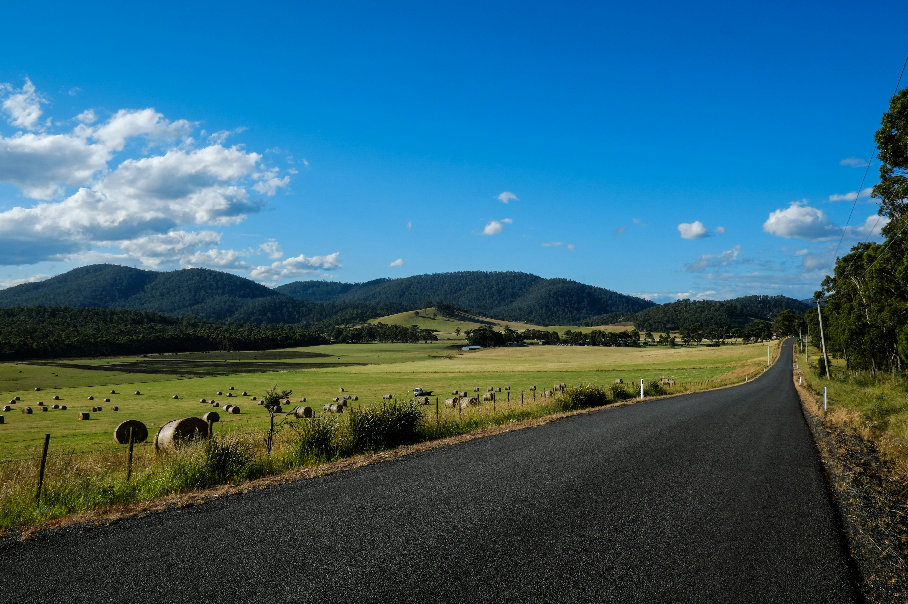

A Tasmânia é o estado insular mais meridional da Austrália, um refúgio de natureza intocada e cultura vibrante que parece pulsar em um ritmo próprio. Conhecida por ter o ar mais puro do mundo, a ilha combina montanhas escarpadas, florestas tropicais temperadas e praias de areia branca banhadas por águas azul-turquesa. Recentemente eleita como um dos destinos tendência para 2026, a capital Hobart mistura o charme histórico de suas construções de arenito com uma cena gastronômica e artística de vanguarda, tornando-a um ponto de parada obrigatória para quem busca autenticidade e beleza natural.
Para quem planeja uma visita, estes são os pontos turísticos e experiências fundamentais:
- Cradle Mountain: O coração do deserto tasmaniano, perfeito para trilhas e para avistar o icônico Diabo da Tasmânia.
- Wineglass Bay: Localizada no Parque Nacional Freycinet, é famosa por sua curvatura perfeita e águas cristalinas.
- MONA (Museum of Old and New Art): Um museu subterrâneo provocativo que revolucionou o cenário cultural de Hobart.
Explorar a Tasmânia é mergulhar em um ecossistema único, onde 40% do território é protegido por parques nacionais e reservas mundiais da UNESCO. O clima temperado da ilha proporciona quatro estações bem definidas, oferecendo desde picos nevados no inverno até verões amenos ideais para caminhadas costeiras. Seja para percorrer trilhas desafiadoras ou para apreciar um vinho de clima frio em um porto histórico, a Tasmânia oferece uma experiência sensorial profunda que permanece na memória muito depois da partida.